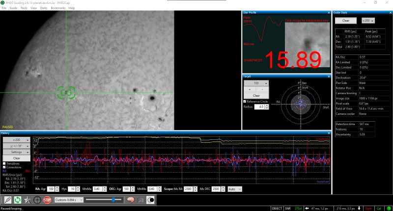
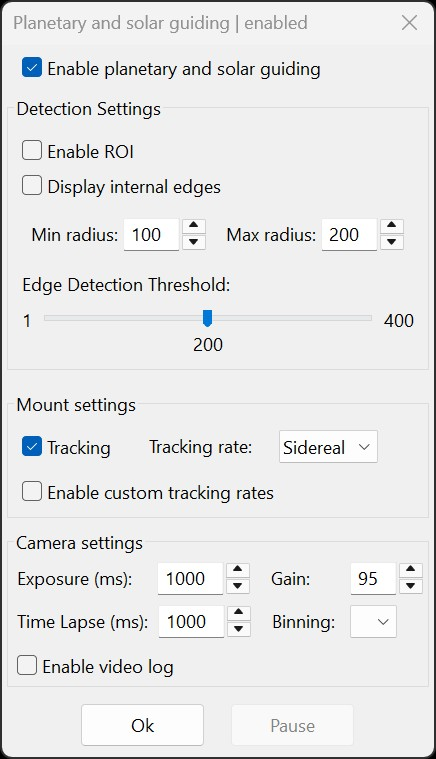

PHD2 is a widely-used autoguiding software, originally developed for long-exposure astrophotography. It compensates for tracking errors by sending periodic guiding pulses to the telescope based on star positions, using a dedicated guidescope, or an off-axis guider with a separate guiding camera. The main objective is to prevent target drift and ensure sharp, long-exposure images.
The author of HelioMaker has developed a custom version of PHD2 to extend its capabilities to guide on solar system objects such as the Sun, Moon, and planets. This version retains the standard PHD2's robust guiding algorithms while introducing advanced methods for detecting and tracking non-stellar objects. When combined with HelioMaker and SharpCap Pro, it enables the simultaneous use of a single physical camera for both guiding and imaging — a groundbreaking feature made possible by the Virtual Planetary Camera.
The custom PHD2 open-source project, including its documentation and helpful resources, is hosted on GitHub. You can explore the project and its accompanying Wiki pages for additional information. The latest release of the custom PHD2 incorporates the recent features from the official PHD2 v2.6.14.
The latest binary release of the custom version PHD2 required for HelioMaker is available on this GitHub page. Navigate to the assets section and download the Windows installer. The custom PHD2 open-source project can be found on the GitHub alongside its Wiki pages.
Community demonstrations highlight the effectiveness of the customized PHD2:
Brent Ellis Presentation: Brent Ellis showcased a solar eclipse imaging setup for the Memphis Astronomical Society, describing this custom PHD2 version as a “game-changer.” You can watch his discussion of the software at this link, and learn about his automation techniques at this link. You may also view Brent’s resulting Eclipse Video.
Lunar Libration and Shadows: A 3-hour time-lapse created by the HelioMaker author demonstrates lunar libration and shifting shadows using the custom PHD2 version.
The custom PHD2 version introduces several advanced features not available in the standard release. These enhancements are especially beneficial for capturing a wide range of solar system phenomena, such as sunspot evolution, all regular lunar phases, lunar libration, planetary rotations, and nearly all phases of solar and lunar eclipses (except for brief moments of totality). The custom version also enables detection and guiding on entire solar, lunar, or planetary disks, as well as partial views of their surfaces when coupled with HelioMaker. Even with imperfect polar alignment, it eliminates drift during extended imaging sessions, ensuring the target remains stable and in the same position for long-duration captures.
Another significant advantage of the added algorithms is their robustness. Based on feedback from beta testers, the algorithms can reliably continue detection and tracking even under challenging conditions, such as partial cloud cover or interference from tree branches, ensuring consistent performance in less-than-ideal environments.
Virtual Planetary Camera: The custom PHD2 introduces a new Virtual Planetary Camera option in the camera selection menu, allowing a single camera to serve both guiding and imaging purposes. This feature is particularly beneficial for planetary imaging workflows that demand precise tracking. When integrated with HelioMaker, the Virtual Planetary Camera seamlessly shares the same physical camera used by the primary imaging application (currently supported via SharpCap Pro and HelioMaker), enabling simultaneous guiding and imaging without interruptions. In addition, the Virtual Planetary Camera is designed to minimize latency, typically maintaining a delay of only 10–15 milliseconds. This low latency lets PHD2 receive near real-time frames and send more responsive corrections, resulting in more effective and accurate guiding.
Planetary and Solar Guiding Tool – a configuration dialog box for managing all aspects of detecting and tracking solar system objects, such as the Sun, Moon, and planets. When used with HelioMaker, certain settings in this tool are automatically adjusted to ensure streamlined operation and synchronization between the two applications.
HelioMaker integration allowing guiding on large celestial bodies offering sub-pixel accuracy. These algorithms support the following modes when PHD2 is set to Planetary and Solar Guiding Mode:
Full Planetary Disk Detection Mode: Enables detection of the full disk or crescent shapes of solar, lunar, and planetary objects. This mode has been proven very effective during the 2024 Great American Solar Eclipse, helping users to keep Sun fixed in the telescope view for the entire eclipse duration (except the brief period of totality), and can be very useful for imaging the lunar eclipses as well.
Surface Features Detection Mode: Enabled exclusively by HelioMaker this option extends PHD2’s detection capabilities by focusing on visible textures and patterns of the Sun or Moon, rather than relying on point-like targets. It is especially helpful at higher magnifications or longer focal lengths, where conventional star-based detection can fail. The mode works with the Virtual Planetary Camera shared through SharpCap Pro and with a supported physical camera connected directly to PHD2. In either arrangement, HelioMaker performs surface-feature detection and PHD2 converts the detected motion into guiding corrections. With a shared primary imaging camera, this provides an entirely software-based guiding solution without dedicated solar-guider hardware.

Guiding on solar surfaceA screenshot of the custom PHD2 during active guiding on the Sun, captured while running a video capture sequence in HelioMaker with SharpCap Pro. In this session, the author used an APM 107/700 refractor equipped with an ERF filter and a DayStar Quark Chromosphere filter.

Screenshot of the Planetary and Solar Guiding Tool in the custom version of PHD2.
By following these suggestions, you can take advantage of all HelioMaker’s advanced features without affecting your existing PHD2 installation or nighttime guiding workflows.
Use a Separate Folder:
For example, "C:\Program Files (x86)\PHDGuiding2-solar", ensuring that updates
to the standard PHD2 do not overwrite the custom version.
PHD2 Instance Numbers: Assign a unique instance number to avoid conflicts between the custom and standard versions. Learn more in How to Configure the PHD2 Instance Number.
Follow HelioMaker Installation Requirements: Consult the Installation and Prerequisites section for a complete setup checklist.